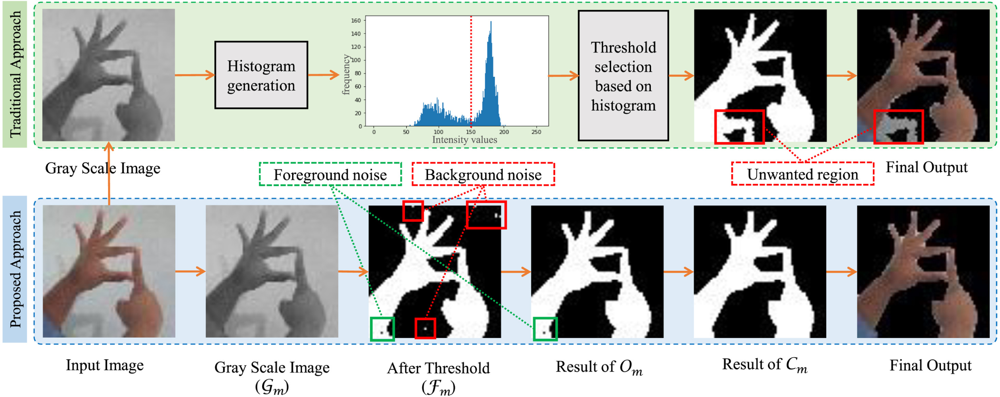

Sunanda Das
Email: sunanda [at] cse [dot] kuet [dot] ac [dot] bd
I am Sunanda Das, currently employed as an Assistant Professor in the Computer Science and Engineering (CSE) department at Khulna University of Engineering & Technology (KUET), Khulna-9203, Bangladesh. Initially, I started as a Lecturer at the CSE department on August 1, 2018. I obtained my B.Sc. degree in Computer Science and Engineering from the Khulna University of Engineering & Technology, Khulna-9203, Bangladesh in 2018.
Research Interests: My research interests lie at the intersection of computer vision and machine learning.
Google Scholar | ORCID | Scopus
Recent News
- [10/2022] One article is accepted for publication in the 'Expert Systems with Applications', Elsevier. (IF: 8.665)
- [07/2022] Recipient of the Vice Chancellor's Award for outstanding performance and contribution to research in Khulna University of Engineering & Technology.
- [03/2022] Recipient of publication grant for 'international conference paper' approved by CASR (Committee for Advanced Studies and Research, KUET, Meeting No.: 61, Date: 15-03-2022)
- [03/2022] Recipient of publication grant for 'journal article' approved by CASR (Committee for Advanced Studies and Research, KUET, Meeting No.: 61, Date: 15-03-2022)
- [11/2021] One paper is accepted for publication in the 24th International Conference on Computer and Information Technology (ICCIT), 2021.
- [10/2021] I am appointed as an 'Assistant Provost' of Dr. M. A. Rashid Hall (4th hall of residents of Khulna University of Engineering & Technology, the activities of this hall started since April 1985).
- [09/2021] One paper is accepted for publication in the 22nd International Conference on Intelligent Data Engineering and Automated Learning (IDEAL), 2021.
- [09/2021] Another article is accepted for publication in the 'IEEE Access' (IF: 3.476)
- [08/2021] One article is accepted for publication in the 'IEEE Access' (IF: 3.476)
Events
- [CAREERTalk 2022] I worked on the team that organized 'Brack Bank CAREERTalk' for the graduating students of CSE and EEE departments.
- [EICT 2021] I was an organizing committee member for the 5th International Conference on Electrical Information and Communication Technology (EICT), 2021, Bangladesh.
- [EICT 2019] I was a technical committee member for the 4th International Conference on Electrical Information and Communication Technology (EICT), 2019, Bangladesh.
Teaching Experience
- CSE 4127: Image Processing and Computer Vision (Theory)
- CSE 4128: Image Processing and Computer Vision Laboratory
- CSE 3207: Applied Statistics and Queuing Theory
- CSE 3100: Web Programming Laboratory
- CSE 3209 (ECE): Database Systems (Theory)
- CSE 3210 (ECE): Database Systems Laboratory
- CSE 2132 (EEE): Data Structure and Algorithms Laboratory
- CSE 2200: Advanced Programming Laboratory
- CSE 2203: Microprocessors and Microcontrollers (Theory)
- CSE 2204: Microprocessors and Microcontrollers Laboratory
- CSE 2207: Numerical Methods (Theory)
Publications
Journals:
|  |
Sunanda Das, Md. Samir Imtiaz, Nieb Hasan Neom, Nazmul Siddique, and Hui Wang Expert Systems with Applications, Elsevier, 2022 (Q1, Impact Factor: 8.665) paper | |

|
Sunanda Das, Awal Ahmed Fime, Nazmul Siddique, and M. M. A. Hashem IEEE Access ( Volume: 9), Page(s): 121060 - 121075, 2021 (Q1, Impact Factor: 3.476) paper | scopus link |

|
Md. Ebtidaul Karim, Mirza Mohd Shahriar Maswood, Sunanda Das, and Abdullah G. Alharbi IEEE Access ( Volume: 9), Page(s): 131476 - 131495, 2021 (Q1, Impact Factor: 3.476) paper | scopus link |

|
Md. Kamrul Hasan, Md. Ashraful Alam, Shidhartho Roy, Aishwariya Dutta, Md. Tasnim Jawad, and Sunanda Das Informatics in Medicine Unlocked, Elsevier, 2021 (Q2) paper | scopus link |
Book Series:

|
Sunanda Das, Masum Billah, and Suraiya Akter Mumu 22nd International Conference on Intelligent Data Engineering and Automated Learning (IDEAL - 2021), Manchester, UK. Lecture Notes in Computer Science, Springer, 2021 paper | scopus link |

|
Md. Nafis Tahmid Akhand, Sunanda Das, and Mahmudul Hasan International Conference on Machine Intelligence and Data Science Applications (MIDAS - 2021), Bangladesh. Lecture Notes on Data Engineering and Communications Technologies, Springer, 2021 paper | scopus link |

|
Md. Ebtidaul Karim, Md. Foysal, and Sunanda Das 3rd Doctoral Symposium On Computational Intelligence (DOSCI - 2022), India. Lecture Notes in Networks and Systems, Springer. 2022 (Accepted) |
International Conferences:

|
Md. Masum Billah, and Sunanda Das 24th International Conference on Computer and Information Technology (ICCIT), 2021 paper | scopus link |

|
Mahmudul Hasan, Sunanda Das, and Md. Nafis Tahmid Akhand 5th International Conference on Electrical Engineering and Information & Communication Technology (ICEEICT), 2021 paper | scopus link |

|
Rezwana Akter Nazri, Sunanda Das, and Rifah Tasnim Haque Promi International Conference on Automation, Control and Mechatronics for Industry 4.0 (ACMI), 2021 paper | scopus link |

|
HM Abdul Fattah, KM Azharul Hasan, and Sunanda Das International Conference on Automation, Control and Mechatronics for Industry 4.0 (ACMI), 2021 paper | scopus link |

|
Noushin Gauhar, Sunanda Das, and Khadiza Sarwar Moury 2nd International Conference on Robotics, Electrical and Signal Processing Techniques (ICREST), 2021 paper | scopus link |

|
Sunanda Das, Sajal Basak Partha, Kazi Nasim Imtiaz Hasan IEEE Region 10 Symposium (TENSYMP), 2020 paper | scopus link |

|
Sunanda Das, Amlan Sarker, and Tareq Mahmud 4th International Conference on Electrical Information and Communication Technology (EICT), 2019 paper | scopus link |

|
Sk Md Masudul Ahsan, Sunanda Das, Shanto Kumar, and Zannati La Tasriba 4th International Conference on Electrical Information and Communication Technology (EICT), 2019 paper | scopus link |

|
Sunanda Das, and Dipayan Biswas 5th International Conference on Advances in Electrical Engineering (ICAEE), 2019 paper | scopus link |

|
Sunanda Das, OFM Riaz Rahman Aranya, and Nishat Nayla Labiba 1st International Conference on Advances in Science, Engineering and Robotics Technology (ICASERT), 2019 paper | scopus link |

|
Sunanda Das, Muhammad Sheikh Sadi, Md Ahsanul Haque, and Md Milon Islam 1st International Conference on Advances in Science, Engineering and Robotics Technology (ICASERT), 2019 paper | scopus link |
Mentorship

Hardware Acceleration Club of KUET (HACK)
- We are a popular community in KUET interested in hardware and embedded systems.
- The aim of HACK is to develop skills in different aspects related to hardware especially in real-life hardware projects.
- We regularly arrange hands-on workshop and motivate students to build their own projects.
- HACK always encourages its members with essential guidelines to build up their career as an expert hardware engineer.